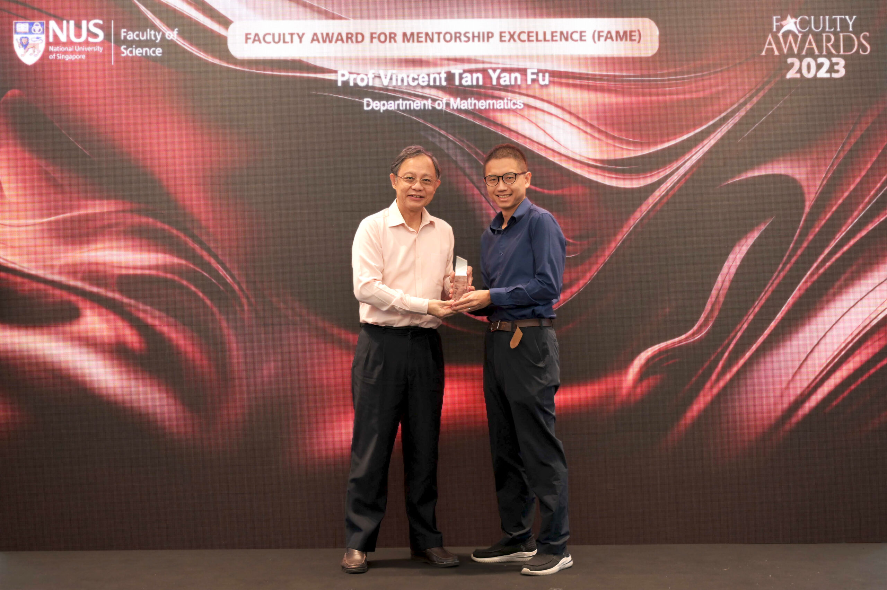

Vincent Y. F. Tan 陈延福 (Pronouns: he/him/his/他)

Images courtesy of Dave Lee (UCO, NUS) |
Professor,
Affiliate,
Office: S17-05-20 (Mathematics) and E4-06-06 (ECE)
My Curriculum Vitae.
|
News (Archive)
- Advertisement: Looking to hire motivated postdocs. Please see this advertisement for more details.
-
Jun 2024: Two recently accepted papers now available on arxiv.
- Influence Maximization via Graph Neural Bandits with Yuting Feng and Bogdan Cautis and to appear in SIGKDD 2024
- Order-Optimal Instance-Dependent Bounds for Offline Reinforcement Learning with Preference Feedback with Zhirui Chen and to appear at the ICML 2024 Workshop on Models of Human Feedback for AI Alignment
- Jun 2024: Paper "Order-Optimal Instance-Dependent Bounds for Offline Reinforcement Learning with Preference Feedback" accepted to the ICML 2024 Workshop on Models of Human Feedback for AI Alignment. Joint work with Ph.D. student Zhirui Chen. Preprint above
- Jun 2024: I will serve on the University Promotion and Tenure Commmittee (UPTC) starting from July 2024.
- Jun 2024: Paper Optimal Private Discrete Distribution Estimation with One-bit Communication accepted to the IEEE Transactions on Information Forensics and Security! Joint work with Seung-Hyun Nam and Si-Hyeon Lee.
- Jun 2024: Paper Optimal Best Arm Identification with Fixed Confidence in Restless Bandits accepted to the IEEE Transactions on Information Theory! Joint work with P. N. Karthik, Arpan Mukherjee, and Ali Tajer.
- Jun 2024: Posted a paper on "MIMO Capacity Analysis and Channel Estimation for Electromagnetic Information Theory". Joint work with Jieao Zhu and Linglong Dai.
- Jun 2024: Rated 4.7/5.0 for my teaching of EE2012 Analytical Methods in ECE last semester. See some review quotes here.
- May 2024: Posted a paper "InstaDrag: Lightning Fast and Accurate Drag-based Image Editing Emerging from Videos". Here is the project page.
- May 2024: Paper "Influence Maximization via Graph Neural Bandits" accepted to the 2024 ACM SIGKDD International Conference on Knowledge Discovery and Data Mining (KDD)! Congrats to postdoc Yuting Feng and collaborator Bogdan Cautis. In this work, we study of Influence Maximization (IM), in which there is limited knowledge about the topology of the diffusion network. We set the IM problem in a multi-round diffusion campaign, aiming to maximize the number of distinct users that are influenced.
- May 2024: Paper Optimal Clustering with Bandit Feedback accepted to the Journal of Machine Learning Research! Congrats to Ph.D. student Junwen Yang and former Ph.D. student Zixin Zhong. In this paper, we propose a computationally efficient and asymptotically optimal algorithm for online clustering with bandit feedback.
- Apr 2024: Paper "A Hybrid Genetic Search and Dynamic Programming-based Split Algorithm for the Multi-trip Time-dependent Vehicle Routing Problem" accepted by the European Journal of Operations Research (EJOR). Congrats to former Ph.D. student Jingyi Zhao and collaborators Mark Poon and Zhenzhen Zhang. My first paper in EJOR.
- Apr 2024: Three papers accepted to ISIT 2024 in Athens, Greece. (i) "Optimal Private Discrete Distribution Estimation with One-bit Communication" with Seung-Hyun Nam and Si-Hyeon Lee; (ii) "Best Arm Identification with Arm Erasures" with former postdocs Srinivas Kota Reddy and P. N. Karthik and (iii) "Robust Distributed Gradient Descent to Corruption over Noisy Channels" with Ph.D. student Shuche Wang.
- Mar 2024: Paper on Indexed Minimum Empirical Divergence-Based Algorithms for Linear Bandits the Transactions on Machine Learning Research. Joint work with Ph.D. student Jie Bian. In this paper, we extend the IMED algorithm so that it is amenable to stochastic linear bandits. We show a state-of-the-art regret bound. Congrats Jie Bian!
- Mar 2024: Paper on Adversarial Combinatorial Bandits with Switching Costs accepted to the IEEE Transactions on Information Theory. Joint work with former postdoc Yanyan Dong. In this paper, we consider the adversarial combinational bandits problem where the switch of each selected arm in each round incurs a fixed cost. We quantify the regret in the semi-bandit and bandit feedback settings. Congrats Yanyan!
- Feb 2024: Paper on DragDiffusion: Harnessing Diffusion Models for Interactive Point-based Image Editing accepted to CVPR 2024 in Seattle and to be presented as a spotlight poster! Congrats to Yujun Shi and all co-authors. In this paper, we enable "drag" editing on diffusion models. By leveraging large-scale pre-trained diffusion models, we greatly improve the generality of "drag" editing.
- Feb 2024: Posted a paper on Multi-Armed Bandits with Abstention. Joint work with Junwen Yang and Tianyuan Jin.
- Feb 2024: Traveling to San Diego for ITA 2024. Here are my slides.
- Feb 2024: Invited to deliver a plenary talk at ISITA 2024.
- Jan 2024: Posted a paper on Variable-Length Feedback Codes over Known and Unknown Channels with Non-vanishing Error Probabilities. Joint work with Recep Can Yavas.
- Jan 2024: Paper on Fixed-Budget Best Arm Identification in Sparse Linear Bandits accepted to the Transactions on Machine Learning Research. Congrats to Recep!
-
Jan 2024: Received the Faculty of Science "Faculty Award for Mentorship Excellence (Research Category)".

- Jan 2024: Posted a paper on Fixed-Budget Differentially Private Best Arm Identification. This is joint work with ISEM Ph.D. student Zhirui Chen, postdoc P. N. Karthik and ISEM collaborator Yeow Meng Chee. In this paper, we address the problem of best arm identification in the fixed-budget setting under differential privacy constraints, considering the notion of ε-differential privacy and provide guarantees on the error probability. This paper will be presented at the upcoming ICLR in Vienna.
- Jan 2024: Three papers accepted at the 2024 International Conference on Learning Representations (ICLR). See CS Conference Papers for details.
- Jan 2024: Former Ph.D. student Zhaoqiang Liu and former postdoc Yonglong Li joined UESTC and Xi'an Jiaotong University, respectively, both as 优秀青年科学基金项目（海外）professors.
- Jan 2024: Invited to give a lecture in the General ML track at the Research Week at Google Research in Bangalore.
- Jan 2024: Rated 4.2/5.0 for my teaching of DSA3102 Convex Optimization last semester. See some review quotes here.
{kind=link}
Research Interests and Open Positions
Online Decision Making, Multi-Armed Bandits, Reinforcement Learning
Information Theory with Applications to Machine Learning
Statistical Signal Processing
I am actively recruiting graduate students in the areas of my research interest above. There are various channels to be admitted to NUS including to the Faculty of Science, the College of Design and Engineering, the Institute of Operations Research and Analytics, and the Integrative Sciences and Engineering Programme (Institute of Data Science).
There are also multiple positions for talented postdoctoral scholars. Postdoctoral scholars with strong publication records and showing interest in the above research topics are also encouraged to contact me to check with me if there are available positions. Please see this advertisement as well as this.
Selected Recent Publications
Indexed Minimum Empirical Divergence-Based Algorithms for Linear Bandits
Jie Bian and Vincent Y. F. Tan
Transactions on Machine Learning Research, 2024+Adversarial Combinatorial Bandits with Switching Costs
Yanyan Dong and Vincent Y. F. Tan
IEEE Transactions on Information Theory, 2024+Federated Best Arm Identification with Heterogeneous Clients
Zhirui Chen, P. N. Karthik, Vincent Y. F. Tan, and Yeow Meng Chee
IEEE Transactions on Information Theory, 2024+DragDiffusion: Harnessing Diffusion Models for Interactive Point-based Image Editing [Project Page]
Yujun Shi, Chuhui Xue, Jun Hao Liew, Jiachun Pan, Hanshu Yan, Wenqing Zhang, Vincent Y. F. Tan, and Song Bai
Proc. of the Conference on Computer Vision and Pattern Recognition (CVPR), Seattle, USA, Jun 2024 (AR ≈ 23.6%, Highlight ≈ 11.9% of Accepted Papers)Fixed-Budget Differentially Private Best Arm Identification [Slides]
Zhirui Chen, P. N. Karthik, Yeow Meng Chee, and Vincent Y. F. Tan
Proc. of the 12th International Conference on Learning Representations (ICLR), Vienna, Austria, May 2024 (AR ≈ 31%)
Oldies But Goldies
Common Information, Noise Stability, and Their Extensions
Lei Yu and Vincent Y. F. Tan
Foundations and Trends® in Communications and Information Theory, Vol. 19, No. 2, Pages 107 - 389, 2022Asymptotic Estimates in Information Theory with Non-Vanishing Error Probabilities
Vincent Y. F. Tan
Foundations and Trends® in Communications and Information Theory, Vol. 11, Nos. 1-2, Pages 1 – 184, 2014Automatic Relevance Determination in Nonnegative Matrix Factorization with the β-Divergence [Slides] [Code]
Vincent Y. F. Tan and Cédric Févotte
IEEE Transactions on Pattern Analysis and Machine Intelligence, Vol. 35, No. 7, Pages 1592 - 1605, Jul 2013A Large-Deviation Analysis of the Maximum-Likelihood Learning of Markov Tree Structures [Slides]
Vincent Y. F. Tan, Animashree Anandkumar, Lang Tong and Alan S. Willsky
IEEE Transactions on Information Theory, Vol. 57, No. 3, Pages 1714 - 1735, Mar 2011Estimating Signals with Finite Rate of Innovation from Noisy Samples: A Stochastic Algorithm [Code]
Vincent Y. F. Tan and Vivek K Goyal
IEEE Transactions on Signal Processing, Vol. 56, Issue 10, No. 5135 - 5145, Oct 2008